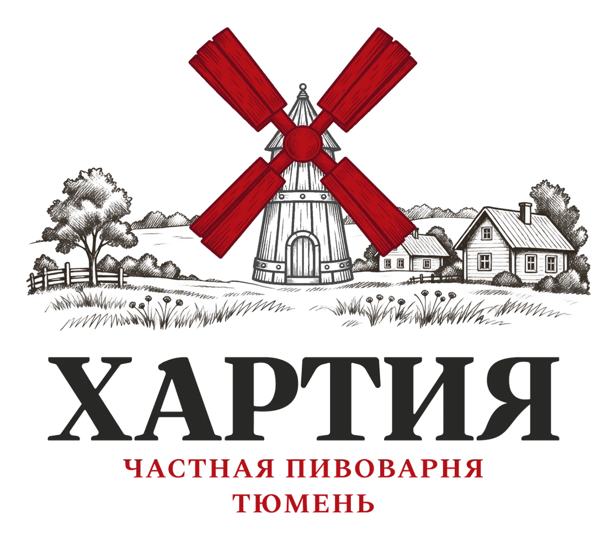

Вода, солод, хмель и дрожжи. Больше ничего.
Частная пивоварня в Тюмени. Варим нефильтрованное пиво вручную, без вкусовых добавок.

Магазин «Баррель»
Основная точка продаж Хартии.
Тюмень, ул. Бакинских Комиссаров, 3
Здесь вы забираете забронированную кегу и выбираете, чем её наполнить. Часы работы будут добавлены.
Аренда кег
Бронь пустой кеги на сайте, наполнение в магазине.
Где найти
Магазин «Баррель» и другие точки Тюмени на карте.
Сорта
Четыре сорта живого пива: плотность и крепость.
О нас
История пивоварни и то, во что мы верим.
О пивоварне
Правила, по которым мы варим, и цех в фотографиях.
Бот
Бот в Telegram и MAX и канал пивоварни.